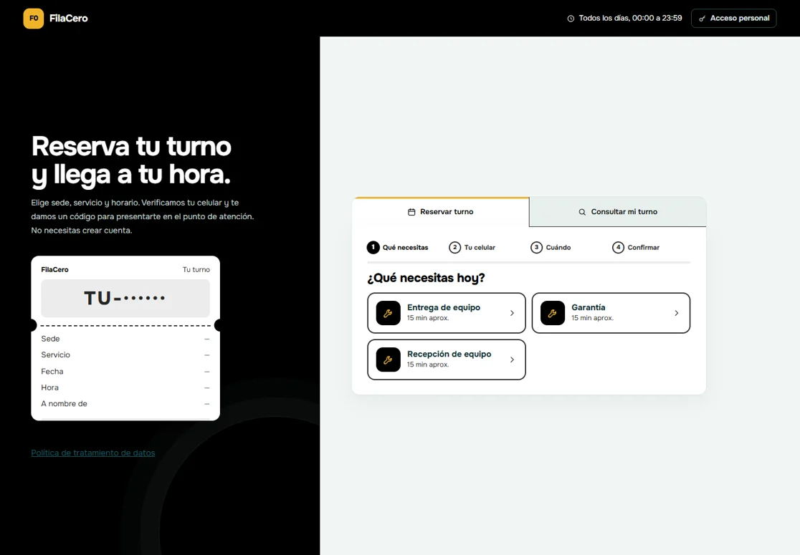

Cliente
Escoge el motivo de la visita y consulta su turno antes de desplazarse.
Gestión de turnos para posventa
Tu cliente elige sede, servicio y franja. Tu equipo sabe qué preparar y a quién atender en el mostrador.

Del celular al mostrador
Escoge el motivo de la visita y consulta su turno antes de desplazarse.
Consulta los pendientes, prepara el equipo y llama al siguiente turno.
Revisa la actividad y los turnos por franja para decidir dónde intervenir.
Demo de servicio técnico
En TecniVisión simulamos la recogida de un televisor con prueba en el mostrador. Podemos recorrer el mismo proceso con una orden ficticia de tu taller.
Un equipo reparado aún puede estar en bodega. Asigna la preparación y comprueba que está listo antes del llamado.
Cuenta personas, puestos y equipos de prueba disponibles. El recurso más escaso determina cuántas visitas caben.
Escoge un servicio, define quién responde por el piloto y acuerda qué resultado justifica ampliarlo.